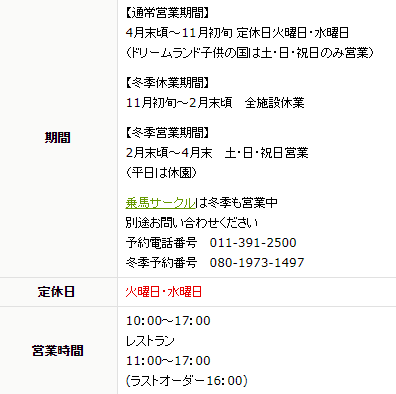

住所：北海道江別市角山５８４−１
お問い合わせ：011-391-2500
営業時間：
アクセス：札幌駅から車で33分
公式HP：アクセス | 夢工房トンデンファーム
札幌のお隣、江別市にある2015年に新しくオープンしたアースドリーム角山農場。大自然の中で様々な動物達とのふれあいが楽しめる体験型牧場です。「動物ふれあい・アドベンチャーエリア」は小学生以上入場料300円。（※2020年2月22日より400円）当日は何度も出入りできるので、心ゆくまでキュートな動物達との時間を堪能できますよ。